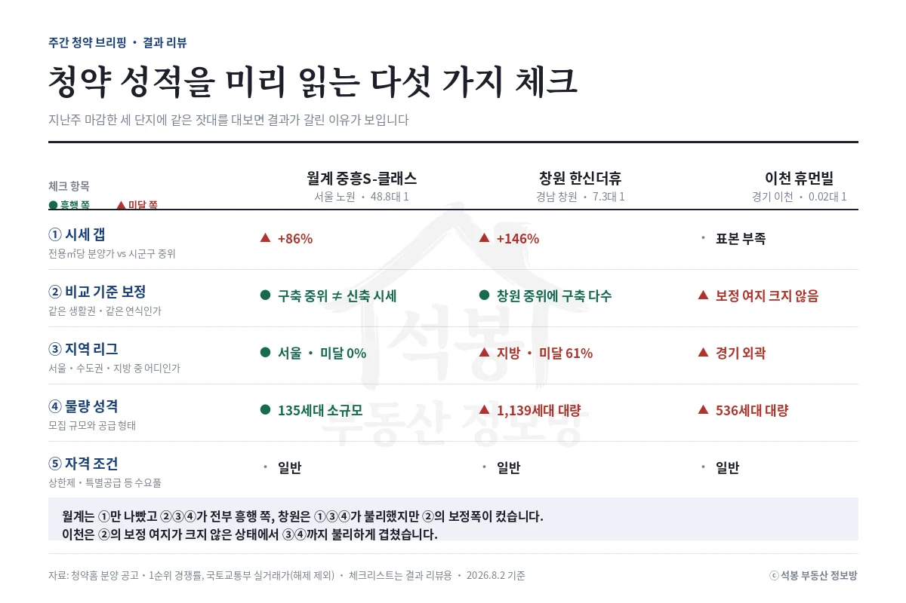

2026년 8월 31일에 같은 날 특별공급을 열고 9월 1일에 나란히 1순위를 받은 인천 두 곳이 9월 2일 접수를 마쳤습니다. 검암역 푸르지오 프라베뉴는 19.0대 1, 시티오씨엘 9단지 오션파크뷰는 0.4대 1이었습니다. 9월 7일 월요일에는 네 곳이 움직이는데 단계가 전부 다릅니다.
8월 31일~9월 6일 성적표: 인천 두 곳, 19.0대 1과 0.4대 1
여기서 말하는 1순위 경쟁률은 1순위 접수 건수를 1순위 일반공급 세대수로 나눈 값입니다. 2순위와 특별공급은 들어가지 않습니다. 8월 31일~9월 6일에 접수를 마친 일반 아파트 공고는 두 곳뿐이고, 둘 다 결과가 나왔습니다.
인천 서해구 검암동의 검암역 푸르지오 프라베뉴는 공공분양 441세대입니다. 1순위 일반공급 114세대에 2,161건이 들어와 19.0대 1이었고, 전용 60㎡대(18.4평)와 84㎡대(25.6평) 여섯 개 주택형이 전부 1순위에서 끝났고, 2순위까지 가서도 남은 세대가 없었습니다. 특별공급 336세대 가운데 327세대가 소진돼 1순위로 넘어온 물량은 9세대뿐이었습니다.
인천 미추홀구 학익동의 시티오씨엘 9단지 오션파크뷰는 반대였습니다. 특별공급 943세대 중 193세대만 팔려 750세대가 1순위로 넘어왔고, 1순위 일반공급이 1,756세대로 불었습니다. 거기에 768건이 들어와 0.4대 1이고, 2순위까지 다 받고도 1,309세대가 주인을 찾지 못했습니다.
전용면적으로 가르면 더 뚜렷합니다. 59.98㎡(18.1평)는 88세대에 370건이 들어와 4.2대 1로 마감했는데, 84.98㎡(25.7평) A형은 942세대에 144건이 들어와 2순위까지 받고도 736세대가 남았습니다. 큰 평형일수록 남은 세대가 많았습니다.
2026년 8월 30일 브리핑에서 짚은 일반공급 비중은 이번에도 그대로 갈렸습니다. 검암역은 총 세대의 26%, 시티오씨엘은 90%가 1순위 일반공급이었습니다.
여기서부터는 회원에게 보여드립니다
카카오 로그인 3초면 전문을 읽을 수 있습니다. 무료입니다.
가입하시면 지역 시장조사 보고서(약식)를 2회 무료로 요청하실 수 있습니다.
이미 회원이면 같은 버튼으로 로그인만 됩니다
경쟁률 공식: 재개발·재건축 일반분양에 접수의 절반이 몰렸습니다
이번 회차(2026년 9월 6일)에는 축을 바꿔 봤습니다. 청약홈 공고에는 그 단지가 정비사업(재개발·재건축) 물량인지를 표시하는 항목이 있습니다. 2026년에 당첨자를 발표한 공고 가운데 1순위 경쟁률과 일반공급 세대수가 모두 확보된 198건을 이 항목으로 갈랐습니다.
재개발·재건축에서 나온 일반분양 38건은 1순위 경쟁률 중위가 13.1대 1이고 미달이 7건(18%)이었습니다. 택지지구·도시개발을 포함한 나머지 160건은 중위 0.8대 1에 87건(54%)이 미달했습니다. 정비사업 물량은 1순위 일반공급 8,175세대로 전체의 12%인데, 1순위 접수는 158,988건으로 전체의 47%를 가져갔습니다.
서울이 섞여서 그런 것은 아닌지 확인했습니다. 서울을 빼면 정비사업 23건이 3.9대 1(미달 30%), 나머지 153건이 0.6대 1(미달 57%)입니다. 경기·인천만 보면 3.9대 1 대 1.3대 1, 지방만 보면 4.5대 1 대 0.4대 1로 방향이 같습니다. 조합원 취소분·보류지 같은 특수 공고 21건을 빼도 결론은 유지됐습니다.
이유는 위치입니다. 정비사업은 이미 사람이 사는 동네 한가운데를 다시 짓는 것이라 교통과 생활권이 검증돼 있고, 조합원 물량을 뺀 일반분양이 작아서 특별공급이 남는 일이 드뭅니다. 택지지구는 그 반대 쪽에 놓이는 경우가 많습니다.
반대로 갈리지 않는 축도 하나 있었습니다. 분양가상한제가 적용된 38건은 미달이 47%, 미적용 160건은 48%로 차이가 없었습니다. 상한제라서 싸다는 기대가 결과로 이어지지 않았습니다. 평택 고덕과 부산 에코델타시티처럼 상한제 택지에서도 미달이 이어졌기 때문입니다.
8월 31일~9월 6일의 인천 두 곳은 둘 다 정비사업이 아닙니다. 검암역은 공공택지, 시티오씨엘은 도시개발구역입니다. 그래서 이 축으로는 둘이 안 갈리고, 위에서 본 특별공급 소진과 일반공급 비중이 결과를 갈랐습니다.
체크 5가지를 인천 두 곳에 대봤습니다

이번 회차에서 결과를 가른 것은 ④ 물량 성격이었습니다. 검암역은 특별공급 97%가 소진됐고 시티오씨엘은 20%였습니다. 남은 750세대가 1순위로 넘어오면서 가점으로 다투는 물량이 통째로 커졌습니다.
① 시세 갭은 이번에는 순서대로 나왔습니다. 검암역 분양가는 전용㎡당 756만원으로 검암동 중위 실거래 527만원보다 43% 위이고, 시티오씨엘은 809만원으로 학익동 중위 343만원보다 136% 위입니다. 다만 ② 비교 기준을 학익동 2020년 이후 신축으로 맞추면 시티오씨엘의 갭은 12%로 줄어듭니다. 어느 기준을 고르느냐로 숫자가 열 배 달라집니다.
③ 지역 리그는 둘 다 인천이라 이번에는 힘을 못 썼습니다. ⑤ 자격 조건은 검암역 쪽이 무겁습니다. 공공분양이라 소득·자산 요건과 청약통장 납입 기준이 따로 걸리고, 그 조건을 넘은 사람들만 2,161건을 넣었다는 뜻입니다.
다음 주 청약 캘린더(9월 7일~13일)
9월 7일 월요일에 네 곳이 움직이는데 단계가 다 다릅니다. 의정부우정 A2는 이날부터 9월 15일까지 9일간 1순위를 받고, 성남복정2 A1 신혼희망타운은 2순위(9월 8일 마감), 브라운스톤 월곡 센트럴은 특별공급입니다. 월곡의 1순위는 9월 8일(해당지역)과 9일(기타지역)로 하루 갈립니다.
9월 8일 화요일에는 인천 두 곳의 당첨자가 발표되고, 대전 경남아너스빌 센텀스카이가 특별공급을 엽니다. 남양주진접2 A-4 신혼희망타운 잔여 5세대는 이날 1순위를 받아 9일에 마치고, 9월 7일 시작한 울산 문수데시앙2단지 공가세대 22세대는 이날 2순위로 마감합니다. 9월 9일 수요일은 대전 경남아너스빌 1순위이고 하루만 받습니다.
9월 10일 목요일에 월곡과 대전이 2순위로 접수를 마치면, 9월 11일부터 13일까지는 새로 열리는 일반 아파트 청약이 없습니다. 그다음 9월 14일 월요일에 양주회천 A-26 공공분양 792세대의 1순위를 비롯해 천안 3곳, 여주, 광주 챔피언스시티, 울산 2곳까지 여덟 곳이 한꺼번에 열립니다.
같은 9월 7일~9일에 청약통장 없이 넣는 무순위 아파트 네 곳과 오피스텔 두 곳(목동윤슬자이 651실, 남양주 진접 서한이다음 141세대 등)이 따로 접수를 받습니다. 그 여섯 곳은 별도 글로 정리했습니다.
다음 주 주목 단지: 서울 하월곡동 62세대와 의정부 녹양동 공공분양
다음 주 접수를 시작하는 곳 중에 500세대가 넘는 수도권 단지는 없어서 이번 회차(2026년 9월 6일)에는 따로 분석 글을 두지 않았습니다. 대신 성격이 다른 두 곳을 짚어 둡니다.
브라운스톤 월곡 센트럴은 성북구 하월곡동 동신아파트 소규모재건축으로 전체 62세대, 일반공급 27세대입니다. 전용 59㎡(18.1평)가 8억 6,200만~9억 1,000만원, 74.96㎡(22.7평)가 10억 7,500만원입니다. 같은 동네 래미안월곡(2006년) 전용 59.75㎡(18.1평)가 2026년 8월 3일 11억 1,000만원에 거래됐으니 분양가는 그 아래에 있습니다.
투기과열지구라 가점 경쟁이 세고, 위에서 본 정비사업 축의 서울 15건은 전부 1순위에서 마감했습니다.
의정부우정 A2 공공분양은 의정부 녹양동 공공주택지구에 이번 공고 185세대(일반공급 27세대, 특별공급 158세대)입니다. 청약홈 화면에는 단지 전체 463세대로 표시되니 두 숫자를 헷갈리지 마세요.
전용 59㎡(18.1평) 4억 419만~4억 646만원인데, 녹양동 전용㎡당 중위 실거래 391만원과 대면 73% 위입니다. 녹양힐스테이트(2006년) 59㎡(18.1평)가 2026년 6월 24일 2억 7,800만원에 팔렸습니다. 공공분양이라 소득·자산 요건은 공고문에서 직접 확인하셔야 합니다.
자료: 청약홈 입주자모집공고·주택형별 공급정보·1순위 경쟁률(2026년 9월 6일 조회), 국토교통부 아파트 매매 실거래(2026년 6월 이후 계약분, 해제 제외). 기준일 2026년 9월 6일.
집계 대상은 2026년 8월 31일~9월 6일 마감 2곳과, 2026년에 당첨자를 발표한 공고 중 1순위 경쟁률·1순위 일반공급 세대수가 모두 확보된 198곳입니다. 정비사업·분양가상한제 여부는 청약홈 공고 항목을 그대로 썼습니다.
분양가는 주택형별 분양 최고금액 기준이고 면적·단가는 전용면적 기준이며, 시세는 그 동의 전용㎡당 중위 실거래입니다.
특별공급 소진은 주택형별 특별공급 세대수에서 1순위로 넘어온 세대를 뺀 값입니다. 투자 권유가 아닙니다.
![[주간 청약 브리핑] 9월 첫째 주 인천 두 곳 결과, 재개발 물량을 셌습니다](../글이미지/20260906/브리핑_성적표.webp)
![[주간 청약 브리핑] 9월 첫째 주 인천 두 곳 결과, 재개발 물량을 셌습니다](../글이미지/20260906/브리핑_경쟁률공식.webp)
![[주간 청약 브리핑] 9월 첫째 주 인천 두 곳 결과, 재개발 물량을 셌습니다](../글이미지/20260906/브리핑_다음주캘린더.webp)